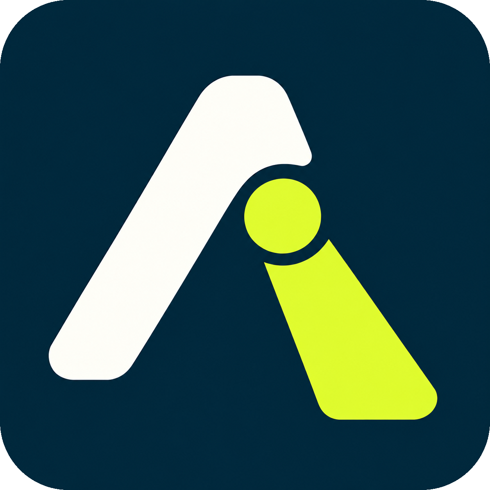

AttenlumePrivacy policy
Last updated:
Attenlume is an offline-first app for recording sessions, photographing slides, taking notes and creating optional local transcripts. This policy explains how Samlytics Data Services ("we", "us") handles information in connection with Attenlume, including the Android app com.samlytics.attenlume and desktop versions.
For privacy questions, contact contactus@samlytics.co.uk. The Samlytics learning platform and its website accounts are separate services; an account there is not required to use Attenlume.
1. Information used locally
Depending on the features you use, Attenlume stores conference names, dates, places you enter, goals, activities, contact details you type, notes, bookmarks, recording times, audio, photos, thumbnails, edit instructions, transcripts, corrections and settings in its app-data folders and local database.
We do not receive this content through normal recording, editing or local transcription. The app does not use your recordings or transcripts to train an online AI service. It does not include advertising, analytics or a custom automatic crash-upload service, and it does not request GPS location or access to your address book. A venue or contact you type yourself is stored as part of your local content.
Recordings and photos can contain personal or confidential information about you and other people. Record only where permitted and take care when choosing what to share.
2. Device permissions
- Microphone
- Used to record audio when you choose to start a recording. Background recording and its notification let a recording you started continue while the screen is locked or another app is open.
- Camera
- Used to take photos you request and link them to the relevant activity. Taking photos does not require the camera to open a second microphone.
- Photos and selected files
- Used to show permitted gallery items, read their timing information where available, and import the photos or files you select. Depending on Android version and your permission choice, the gallery feature may see a permitted library or a selected subset. Original gallery files are not deleted by importing them.
- Notifications
- Used for recording status and controls on supported platforms.
- Optional device authentication
- If you enable app lock, the operating system checks your fingerprint, face, PIN or other supported device credential. Attenlume receives the authentication result, not your biometric template or device PIN.
You can manage permissions in your device settings. Some functions will not work when their required permission is denied.
3. Optional transcription and model downloads
Transcription is off by default. Enabling it does not automatically download a model or transcribe every recording. You separately request the model download and choose which saved or imported audio to transcribe.
The model is downloaded over HTTPS from Hugging Face and its delivery infrastructure. Those services necessarily receive connection information such as your IP address and ordinary request headers when you request the download. See the Hugging Face privacy policy. Audio and transcripts are not sent with the model-download request.
Recognition then runs locally. Original machine text and your corrections are saved locally. Switching transcription off stops processing; removing its downloaded model is a separate action and does not remove recordings or saved text. Transcripts can be inaccurate and should be reviewed before use.
5. Support enquiries and optional gifts
If you email us, we receive your address, message and any attachments you choose to send. We use that information to respond, investigate the issue and maintain appropriate support records. Do not send recordings or sensitive transcripts unless they are needed and you choose to share them. Our email service providers also process the correspondence to deliver it.
Some direct-download versions offer an optional link to support development through PayPal. Availability depends on the build and distribution channel. Payments take place outside Attenlume; no payment is required to record, transcribe or export. Opening the link is not treated as proof of payment.
If you make a payment, PayPal processes it under the PayPal privacy statement and may provide Samlytics with transaction details, such as the amount, reference and payer contact information, for payment records and enquiries. Attenlume itself does not ask you to enter or store bank, card or PayPal credentials. External providers may process information in other countries as described in their own notices.
6. Retention and deletion
- Local app content: remains until you remove it through an available app control or clear the relevant app data. Storage Manager provides confirmed cleanup options; some removal actions require a verified export first. Removing a model does not remove your audio or text.
- Android: clearing app storage or uninstalling normally removes app-private content. Files you exported elsewhere are separate, and operating-system backup or restore settings may retain or restore other copies.
- Windows: uninstalling does not automatically remove the separate app-data folder. Local data is normally in
%LOCALAPPDATA%\Samlytics\Attenlume. Export anything important before intentionally removing that folder. - Exports, shared copies and backups: must be managed at their destination; deleting a local item does not recall copies already shared.
- Information sent to us: support correspondence is kept for as long as reasonably necessary to handle the request and meet relevant legal obligations. Transaction records may need to be retained for accounting or legal purposes. You can contact us about deletion; we will explain any information we must retain.
We cannot remotely access or delete app content that you have kept solely on your device.
7. Security and your device
App content is stored in app-data locations, and model downloads use HTTPS. Optional app lock adds the operating system's authentication check to access within the app. App lock is not a promise that every database, recording or export is separately encrypted. Protect your device account, review backup and sharing settings, and choose appropriate destinations for confidential material.
8. Your choices, rights and privacy contact
You can use the core app without an account, decline optional transcription, control permissions, choose exports and manage local data. Depending on applicable law, you may have rights to access, correct, delete or restrict the use of information we hold about you, or object to that use.
Contact contactus@samlytics.co.uk with the subject "Attenlume privacy enquiry". For data held only on your device, we can explain the available controls, but cannot retrieve it from our servers because we do not hold that copy.
If you remain concerned about how we handle your personal information, you may contact your local data-protection authority. In the UK, see the Information Commissioner's Office guidance.
9. Changes to this policy
We will update this page when the app's data handling changes and show the revised date above. New network, account, analytics or other data-processing features require an appropriate explanation before use. This policy describes the current app; planned cloud or live-caption features should not be assumed to be available.